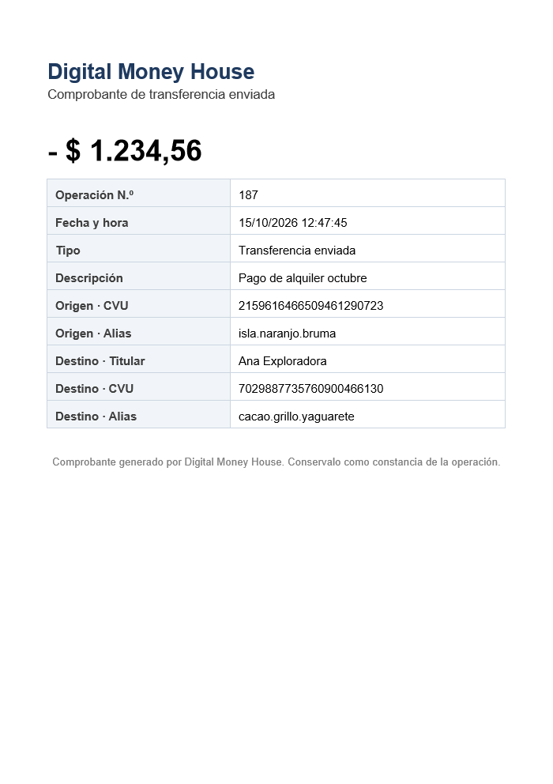

Qué se hizo, y en qué momento y para qué se usó cada herramienta y framework
Sobre la base del Sprint 1 (registro, login y logout con 5 microservicios) se completaron los sprints 2, 3 y 4. Ahora la billetera permite ver el saldo y los movimientos, editar el perfil y el alias, asociar tarjetas, cargar dinero desde una tarjeta, ver y filtrar toda la actividad, y transferir a otras cuentas por CVU, CBU o alias, con un comprobante en PDF. También se cubrieron las épicas de testing: automatización con RestAssured, colección de Postman, testing exploratorio y QA sign-off. En infraestructura se sumaron las imágenes para AWS y la integración continua en GitHub Actions.
Sobre Docker. La PC donde se trabajó no puede ejecutar Docker. Para no dejar el
entorno Docker sin probar, se armó un workflow de GitHub Actions que, en cada push, construye las
imágenes, levanta el docker-compose completo (MySQL, MailHog y los 5 servicios) y corre
contra él la automatización y la suite de casos. El resultado está en la sección 7.
| Pedido | Dónde está | Estado |
|---|---|---|
| Sprint 2 | ||
Dinero disponible (GET /accounts/ID) y últimos 5 movimientos (GET /accounts/ID/transactions) | AccountController | Hecho |
Perfil: GET y PATCH /users/ID; GET y PATCH /accounts/ID | UserController, AccountController | Hecho |
| Tarjetas: listar (200 vacío o con lista), detalle, alta (201/409/400) y baja (200/404) | CardController | Hecho |
| Testing manual: planilla, mantenimiento del Sprint 1, smoke y regresión, ejecución | casos-de-prueba.xlsx | Hecho |
| Automatizar la suite de smoke con Java y RestAssured, y subir el framework | Módulo api-tests | Hecho |
| Sprint 3 | ||
Toda la actividad (GET /accounts/ID/activity) y el detalle de una actividad | ActivityController | Hecho |
Ingresar dinero desde una tarjeta (POST /accounts/ID/transferences, 201) | TransferenceController | Hecho |
| Testing exploratorio y casos del Sprint 2 en la automatización | testing-exploratorio-sprint-3.md, api-tests | Hecho |
| Opcional: filtrar la actividad por monto, período e ingreso/egreso | Parámetros de /activity | Hecho |
| Sprint 4 | ||
| Transferir a CBU/CVU/alias (200, 400 cuenta inexistente, 410 fondos insuficientes) y últimos destinatarios | TransferenceController | Hecho |
| Testing manual del Sprint 3 y validación con Postman y scripts | docs/postman | Hecho |
| Testing exploratorio y QA sign-off | testing-exploratorio-sprint-4.md, qa-sign-off.md | Hecho |
| Docker Compose e imagen para deployar en AWS | docker-compose.yml, docker-compose.aws.yml, workflow de imágenes, deploy-aws.md | Hecho; AWS sin cuenta para probar |
| Opcional: comprobante en PDF y últimas 5 cuentas a las que se transfirió | /activity/ID/receipt, GET /transferences | Hecho |
| # | Qué se hizo | Herramienta o framework, y para qué |
|---|---|---|
| 1 | Subida a GitHub del Sprint 1 y lectura de las consignas de los sprints 2 a 4. | Git: remoto origin y push de las tres ramas. Al cerrar cada sprint, dev se integra en test y main y se sube. |
| 2 | Modelo de datos de los sprints 2 a 4, pensado de una vez: cuenta con saldo, tarjeta y movimiento. | Spring Data JPA: entidades Card y Transaction, enums para tipos y marcas. BigDecimal para los montos, nunca double. |
| 3 | Regla de acceso a una cuenta: solo el dueño o un administrador. | Spring Security: el usuario del JWT se compara con el dueño de la cuenta (AccountAccess). Un usuario común recibe 403 aunque la cuenta no exista, para no revelar qué ids existen. |
| 4 | Tarjetas: alta, listado, detalle y baja. | Bean Validation para el formato; algoritmo de Luhn para el número; huella HMAC-SHA256 (javax.crypto) para detectar tarjetas repetidas sin guardar el número. El código de seguridad se valida y se descarta. |
| 5 | Perfil: edición de nombre, apellido y teléfono; el registro devuelve el id de la cuenta. | Spring MVC (@PatchMapping) y @PreAuthorize para "solo el propio usuario". |
| 6 | Framework de automatización (módulo api-tests). | RestAssured + JUnit 5: tests contra el sistema levantado entrando por el gateway, con etiquetas smoke y regression. Leen el código de verificación desde MailHog. |
| 7 | Tiempos de caché de Eureka: el gateway tardaba hasta 90 s en ver un servicio recién levantado. | Configuración de Eureka y de Spring Cloud LoadBalancer: ahora tarda unos segundos. |
| 8 | Ingreso de dinero desde tarjeta. | JPA con bloqueo pesimista (SELECT … FOR UPDATE) y optimista (@Version): dos ingresos simultáneos no se pisan el saldo. |
| 9 | Actividad, detalle y filtros (monto, período, ingreso/egreso). | JPA Specifications (Criteria API): la consulta se arma con los filtros presentes. Fechas en hora de Argentina. |
| 10 | Testing exploratorio de los sprints 3 y 4: 79 pruebas en 4 sesiones, 5 defectos. | Scripts de Python para peticiones simultáneas y repetidas. |
| 11 | Corrección de defectos: tipos estrictos en el JSON, errores sin clases internas, filtro sin mayúsculas, idempotencia con huella, CVU con espacios. | Jackson (configuración de coerción), un Converter de Spring y @RestControllerAdvice. |
| 12 | Transferencias por CVU/CBU/alias. | Transacción de Spring (@Transactional): débito y crédito juntos. Las dos cuentas se bloquean siempre en el mismo orden (id menor primero) para evitar deadlocks. OpenFeign trae el nombre del titular desde users-service; si no responde, la transferencia se hace igual. |
| 13 | Idempotencia contra el doble envío. | Header Idempotency-Key: la clave se guarda con una huella SHA-256 de la operación. El mismo pedido devuelve el original; la misma clave con otros datos devuelve 409. |
| 14 | Comprobante en PDF. | OpenPDF: genera el PDF con los mismos datos que el detalle de la actividad. |
| 15 | Colección de Postman con 41 requests y scripts. | Postman (formato v2.1). Se validó con un ejecutor equivalente, porque en la PC no hay Postman. |
| 16 | Integración continua y prueba de Docker. | GitHub Actions: compila y testea en cada push, construye las imágenes con el Dockerfile, levanta docker-compose y corre la automatización y la suite contra él. |
| 17 | Imágenes para AWS y guía de despliegue. | Workflow que publica en GitHub Container Registry y, si se configura, en Amazon ECR (con OIDC, sin claves guardadas). docker-compose.aws.yml para un servidor EC2. Guía para ECS Fargate + RDS. |
| 18 | Documentación: planilla, exploratorios, QA sign-off, README y este informe. | Python para la planilla .xlsx y Chrome sin interfaz para este PDF. |
| Endpoint | Qué hace | Respuestas |
|---|---|---|
GET /accounts/{id} | Cuenta con su dinero disponible | 200 · 400 · 403 |
PATCH /accounts/{id} | Cambiar el alias | 200 · 400 · 403 · 409 |
GET /accounts/{id}/transactions | Últimos 5 movimientos | 200 · 403 |
PATCH /users/{id} | Editar nombre, apellido y teléfono | 200 · 400 · 403 · 404 |
GET /accounts/{id}/cards y /cards/{cardId} | Listar tarjetas y ver una | 200 · 403 · 404 |
POST /accounts/{id}/cards | Asociar una tarjeta | 201 · 400 · 409 |
DELETE /accounts/{id}/cards/{cardId} | Eliminar una tarjeta | 200 · 404 |
GET /accounts/{id}/activity | Toda la actividad, con filtros opcionales | 200 · 400 · 403 |
GET /accounts/{id}/activity/{transactionId} | Detalle de un movimiento | 200 · 400 · 403 · 404 |
GET /accounts/{id}/activity/{transactionId}/receipt | Comprobante en PDF | 200 · 403 · 404 |
POST /accounts/{id}/transferences | Con cardId: ingreso desde tarjeta. Con destination: transferencia | 201 · 200 · 400 · 403 · 404 · 409 · 410 |
GET /accounts/{id}/transferences | Últimas 5 cuentas a las que se transfirió | 200 · 403 |
La consigna usa la misma URL (POST /accounts/ID/transferences) para el ingreso desde
tarjeta del Sprint 3 y la transferencia del Sprint 4. Se respetó: el cuerpo indica cuál es y cada una
responde con el código que pide su sprint (201 y 200).
| Decisión | Por qué |
|---|---|
Montos con BigDecimal y escala 2 | Con double, 0,1 + 0,2 no da 0,3. Se verificó que 10 ingresos de $0,10 dan exactamente $1,00. |
| Bloqueo pesimista de las cuentas al mover dinero | Sin bloqueo, dos operaciones simultáneas leen el mismo saldo y una pisa a la otra. Probado con 12 ingresos y con 20 transferencias cruzadas al mismo tiempo. |
| Orden fijo de bloqueo (id menor primero) | Si A→B bloquea A y espera B mientras B→A bloquea B y espera A, se trancan las dos (deadlock). Con orden fijo eso no puede pasar. |
| Idempotencia con huella de la operación | Un doble clic o un reintento por timeout no repite la transferencia. Reusar la clave con otros datos es un error (409), no una respuesta silenciosa (defecto DEF-009). |
| Copia de los datos de la contraparte en el movimiento | El comprobante tiene que mostrar lo que fue, aunque después cambie el alias o se elimine la tarjeta. |
| Huella HMAC del número de tarjeta, no el número | Permite detectar la misma tarjeta en otra cuenta (409) sin guardar el número. Un hash simple no alcanza: los números de tarjeta se pueden probar por fuerza bruta. |
| Datos del titular por Feign sin bloquear la operación | El nombre del titular no es necesario para mover el dinero: si users-service no responde, la transferencia se completa igual. |
| Tipos estrictos en el JSON | En una operación con dinero, "amount": "100" debe rechazarse, no adivinarse (defecto DEF-006). |
| Nivel | Qué hay | Resultado |
|---|---|---|
| Unitarios e integración (JUnit) | Cada servicio completo contra H2, incluidas pruebas de concurrencia, idempotencia y el PDF. | 190 de 190 |
| Automatización de API (RestAssured) | Módulo api-tests: smoke (21) y regresión (75), contra el sistema levantado. | 75 de 75 |
| Planilla de casos | 138 casos de los 4 sprints, con suite de humo (22) y de regresión (138). | 138 de 138: 136 en local y 2 en Docker (GitHub Actions, sección 7) |
| Postman | 41 requests con scripts, en el orden de uso de la billetera. | 41 de 41 |
| Exploratorio | Sprint 3: 2 sesiones, 48 pruebas. Sprint 4: 2 sesiones, 31 pruebas. | 5 defectos, todos resueltos |
| ID | Severidad | Defecto | Corrección |
|---|---|---|---|
| DEF-009 | Alta | Reusar la clave de idempotencia con otro monto devolvía la transferencia original como si fuera la nueva. | Huella de los datos junto a la clave; distinta → 409. |
| DEF-006 | Media | El ingreso de dinero aceptaba el monto y la tarjeta como texto. | Tipos estrictos en el JSON. |
| DEF-007 | Baja | Los errores de conversión mostraban clases internas de Java. | Mensaje genérico, en los 3 servicios. |
| DEF-008 | Baja | El filtro direction distinguía mayúsculas. | Conversión sin distinguir mayúsculas. |
| DEF-010 | Baja | Un CVU con espacios o guiones no se reconocía. | Se limpian antes de buscar. |
Casos ejecutados: 138 · pasados: 138 (136 en local y los 2 de Docker en GitHub Actions) · defectos
reportados y resueltos: 10 de 10 (los 4 sprints) · casos automatizados: 75 con RestAssured, además de
190 tests JUnit. Detalle en docs/testing/qa-sign-off.md.

Resultado: CI en verde (ejecución #4, commit 08442ee). En un servidor de GitHub con Docker se construyeron las 5 imágenes, se levantó el entorno completo, pasaron los 75 casos RestAssured y la suite de la planilla contra MySQL y MailHog, y los datos siguieron ahí después de reiniciar los servicios. Las tres primeras ejecuciones fallaron por errores de los scripts de prueba del pipeline, no del sistema, y se corrigieron.
.github/workflows/ci.yml): en cada push, compila y corre los tests; después levanta docker-compose.yml, espera a que los servicios estén registrados en Eureka y corre la automatización RestAssured, la suite de casos y la prueba de persistencia en MySQL reiniciando los servicios..github/workflows/publish-images.yml): a pedido o con un tag v*, construye las 5 imágenes y las publica en GitHub Container Registry y, si se configura, en Amazon ECR.docker-compose.aws.yml levanta el sistema en un servidor EC2 con las imágenes publicadas; docs/deploy-aws.md explica ese camino y el de ECS Fargate + RDS. No se desplegó en una cuenta real de AWS.docs/proyecto-y-stack.md quedó fuera del repositorio porque es material personal.